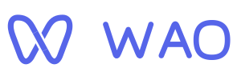

品牌参考 · V4
同一个标识，适应不同背景
使用正式矢量文件；保留透明穿插，不加渐变或立体描边。


小尺寸，使用光学版本
16–24px 保留更大的有效轮廓与中央留白；32px 及以上使用标准图形。

留一点空白，让标识呼吸
保留固定比例；文字和按钮不挤进品牌的安全留白。
组合外侧 · 至少 ¼H 留白
H 为图形画布高度，图形与字标间距约 ¼H。图形与字标垂直居中，不单独拉伸。
最小尺寸 · 保持清楚
独立图形最小 16px，组合最小 88px 宽，独立字标最小 44px 宽。更大尺寸优先使用 SVG。
品牌色，轻量出现
蓝紫用于识别，深浅中性色适应呼吸空间；内容保持自己的阅读节奏。
蓝紫#5665E9 · 主色
深墨绿#273C3B · 单色
暖纸白#F6F6ED · 浅底
夜色#202B2A · 深底
在页面里，保持熟悉的位置
导航与公开入口
菜单展开时品牌在侧栏左上角，折叠后在顶部菜单前；右下角保留轻量 WAO Life OS 签名。登录与分享页使用同一套图形和字标。
呼吸与伙伴
呼吸页跟随文字色使用单色标识，背景柔环保持静态、低对比。小画家、小书虫、小开心、小青蛙保留各自颜色与特征。